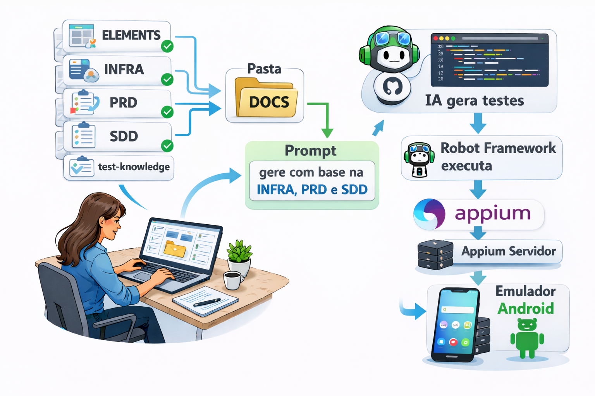

🎯 Objetivos de Aprendizagem
Ao final desta aula, você será capaz de:
Objetivo 1
Compreender a importância da documentação estruturada em projetos de QA
Objetivo 2
Identificar e utilizar corretamente cada template (PRD, SDD, Elements, Test Knowledge)
Objetivo 3
Aplicar o workflow completo em um projeto real de automação de testes
Objetivo 4
Criar documentação completa para uma funcionalidade do zero
- Conhecimento básico de testes de software
- Familiaridade com conceitos de QA
- Nenhuma experiência prévia com automação necessária!
🎬 Demonstração do Projeto
Vídeo da Automação em Ação
Modelo de Arquitetura

📖 Módulo 1: Fundamentos da Documentação QA
1.1 Por que Documentar?
Antes de mergulharmos nos templates, é crucial entender por que a documentação é essencial:
Com Documentação
- ✅ Equipe alinhada com objetivos claros
- ✅ Novos membros entendem o projeto rapidamente
- ✅ Menos retrabalho e bugs
- ✅ Manutenção facilitada
- ✅ Rastreabilidade de requisitos
Sem Documentação
- ❌ Conhecimento concentrado em poucas pessoas
- ❌ Implementações inconsistentes
- ❌ Dificuldade em onboarding
- ❌ Perda de contexto ao longo do tempo
- ❌ Mais tempo debugando
1.2 A Pirâmide da Documentação QA
Nossa metodologia segue uma estrutura lógica e progressiva:
Base: PRD (O QUE testar)
Define requisitos, casos de teste e metodologia. É o alicerce de tudo.
Camada 2: Elements (ONDE testar)
Mapeia todos os elementos de UI com localizadores. São os pontos de interação.
Camada 3: SDD (COMO implementar)
Define arquitetura técnica e stack. É o plano de execução.
Topo: Test Knowledge (Conhecimento acumulado)
Convenções, padrões e lições aprendidas. É a sabedoria do time.
- PRD = Planta da casa (o que será construído)
- Elements = Localização de portas, janelas, interruptores
- SDD = Especificações técnicas de materiais e métodos
- Test Knowledge = Código de obras e boas práticas da construção
1.3 Conceitos-Chave
Termos Essenciais
- Caso de Teste: Cenário específico que valida um comportamento do sistema
- Localizador (Locator): Forma de identificar um elemento na UI (XPath, ID, CSS)
- Page Object: Padrão de design que encapsula elementos e ações de uma página
- Keyword: No Robot Framework, uma função reutilizável que executa ações
- Framework: Estrutura de software que facilita a criação de testes
📄 Módulo 2: Conhecendo os Templates
Agora vamos explorar detalhadamente cada template disponível. Preste atenção na ordem e na relação entre eles!
Template 1: PRD (Product Requirements Document)
📍 Arquivo: prd/PRD_TEMPLATE.md
🎯 Quando usar: Logo no início do projeto, antes de qualquer código
O que este documento responde?
- ❓ O QUE vamos testar?
- ❓ POR QUE precisamos testar isso?
- ❓ QUAIS casos de teste são necessários?
- ❓ QUAL metodologia vamos seguir? (BDD, TDD, etc.)
- ❓ O QUE NÃO será testado? (escopo negativo)
Conteúdo típico do PRD:
Template 2: Elements (Mapeamento de Elementos UI)
📍 Arquivo: elements/ELEMENTS_TEMPLATE.md
🎯 Quando usar: Logo após o PRD, antes de implementar os testes
O que este documento responde?
- ❓ ONDE estão os elementos na interface?
- ❓ COMO identifico cada botão, campo, texto?
- ❓ QUAL o tipo de cada elemento? (Button, TextField, etc.)
- ❓ QUAIS são os estados possíveis? (enabled, disabled, visible)
Exemplo de mapeamento:
Template 3: SDD (Software Design Document)
📍 Arquivo: ssd/SDD_TEMPLATE.md
🎯 Quando usar: Após PRD e Elements, antes da implementação
O que este documento responde?
- ❓ COMO será a arquitetura do projeto?
- ❓ QUAIS tecnologias e versões usar?
- ❓ COMO organizar pastas e arquivos?
- ❓ QUAIS dependências são necessárias?
- ❓ COMO configurar o ambiente?
Exemplo de conteúdo:
Template 4: Test Knowledge (3 documentos)
📍 Arquivos: test-knowledge/[ROBOT_CONVENTIONS | TEST_PATTERNS | TEST_RULES]_TEMPLATE.md
🎯 Quando usar: Consultar durante todo o projeto
📘 Robot Conventions
O que contém: Regras de sintaxe do Robot Framework
- Como escrever código Robot corretamente
- Separadores e indentação
- Estrutura de arquivos .robot
- Nomenclatura de keywords
📘 Test Patterns
O que contém: Padrões de design e boas práticas
- Page Object Pattern
- Wait Strategies (como esperar elementos)
- Retry Patterns (como lidar com falhas temporárias)
- Anti-Patterns (o que NÃO fazer)
📘 Test Rules
O que contém: Regras específicas do projeto
- Regras de nomenclatura
- Como estruturar testes
- Quando usar keywords vs. bibliotecas diretas
- IMPORTANTE: Não criar arquivos .md adicionais!
🔄 Módulo 3: Workflow Passo a Passo
Agora que você conhece os templates, vamos aprender a ordem correta de aplicá-los em um projeto real.
Fluxo Completo: Do Início ao Fim
Passo 1: Criar e Preencher o PRD
⏱️ Tempo estimado: 1-2 horas
🎯 Objetivo: Definir claramente O QUE será testado
Como fazer:
- Copie o arquivo
PRD_TEMPLATE.md - Renomeie para
PRD.md - Leia atentamente cada seção
- Substitua TODOS os [PLACEHOLDERS]
- Liste TODOS os casos de teste planejados
- Defina a metodologia (BDD, TDD, etc.)
- Especifique o que NÃO será testado (escopo negativo)
Passo 2: Mapear Elementos (Elements)
⏱️ Tempo estimado: 2-4 horas
🎯 Objetivo: Identificar ONDE estão todos os elementos de UI
Como fazer:
- Abra o aplicativo que será testado
- Use ferramentas de inspeção:
- Android:
uiautomatorviewerou Appium Inspector - iOS: Appium Inspector ou Xcode Inspector
- Web: DevTools do navegador (F12)
- Android:
- Para cada tela do PRD:
- Identifique todos os elementos visíveis
- Capture o localizador (XPath, ID, CSS)
- Documente o tipo (Button, TextField, etc.)
- VALIDE que o localizador funciona!
- Preencha o
Elements.md
Passo 3: Planejar Arquitetura (SDD)
⏱️ Tempo estimado: 1-2 horas
🎯 Objetivo: Definir COMO será a implementação técnica
Como fazer:
- Escolha as tecnologias:
- Linguagem (Python, JavaScript, Java?)
- Framework de teste (Robot, Pytest, Jest?)
- Ferramenta de automação (Appium, Selenium, Playwright?)
- Defina as versões específicas de cada tecnologia
- Desenhe a estrutura de pastas do projeto
- Liste todas as dependências necessárias
- Documente configurações especiais
- Preencha o
SDD.md
Passo 4: Revisar Test Knowledge
⏱️ Tempo estimado: 30 minutos - 1 hora
🎯 Objetivo: Entender convenções e padrões antes de codificar
Como fazer:
- Leia
Robot-Conventions.mdpara entender sintaxe - Leia
Test-Patterns.mdpara conhecer boas práticas - Leia
Test-Rules.mdpara seguir regras do projeto - Anote dúvidas e esclareça com o time
- Durante a implementação, consulte sempre que necessário
Passo 5: Implementar os Testes
⏱️ Tempo estimado: Variável (depende da complexidade)
🎯 Objetivo: Codificar os testes seguindo a documentação
Como fazer:
- Crie a estrutura de pastas conforme SDD
- Crie os arquivos Page Objects usando Elements.md
- Implemente as keywords reutilizáveis
- Escreva os casos de teste conforme PRD
- Execute e valide cada teste
- Ajuste conforme necessário
Resumo Visual do Workflow
💻 Módulo 4: Hands-On - Colocando em Prática
Agora é hora de colocar a mão na massa! Vamos usar um exemplo real passo a passo.
Estudo de Caso: Automação de Login
Vamos documentar e planejar testes para uma tela de login simples de um app mobile.
🎯 Cenário
App: MyApp Mobile Banking
Feature: Tela de Login
Objetivo: Criar documentação completa antes de implementar testes
Elementos da Tela:
- Campo: Email
- Campo: Senha
- Botão: Entrar
- Link: Esqueci minha senha
- Checkbox: Lembrar-me
Exercício 1: Criar o PRD
Exercício 2: Mapear Elementos
Exercício 3: Definir Arquitetura (SDD)
📋 Projeto de Referência Completo
Confira o projeto alarm-project na pasta docs/. Ele contém:
- ✅ PRD.md completo com 5 casos de teste
- ✅ Elements.md com todos os localizadores validados
- ✅ SDD.md com arquitetura e stack definidos
- ✅ Test Knowledge adaptado para Android
- ✅ Implementação real em Robot Framework
✏️ Exercícios Práticos
Teste seu conhecimento com estes exercícios práticos!
Exercício 1: Identifique o Template Correto
Para cada situação, identifique qual template usar:
- Situação A: Preciso listar todos os botões e campos da tela de cadastro
- Resposta: Elements.md
- Situação B: Preciso definir quais casos de teste vou implementar
- Resposta: PRD.md
- Situação C: Preciso documentar qual versão do Python vou usar
- Resposta: SDD.md
- Situação D: Preciso consultar como escrever keywords no Robot Framework
- Resposta: Robot-Conventions.md
Exercício 2: Coloque na Ordem Correta
Ordene as atividades na sequência correta:
- [ ] Implementar os testes em código
- [ ] Mapear localizadores de elementos
- [ ] Definir casos de teste e metodologia
- [ ] Escolher stack tecnológico
- Definir casos de teste e metodologia (PRD)
- Mapear localizadores de elementos (Elements)
- Escolher stack tecnológico (SDD)
- Implementar os testes em código
Exercício 3: Tarefa Prática
🎯 Desafio: Escolha uma funcionalidade simples de um app que você conhece (exemplo: calculadora, cadastro básico) e:
📊 Avaliação e Próximos Passos
Checklist de Aprendizagem
Você completou a aula quando conseguir fazer tudo isso com confiança:
🎓 Níveis de Domínio
Nível 1: Iniciante
✅ Entende os 4 tipos de templates
✅ Sabe a ordem do workflow
✅ Consegue preencher templates com ajuda
Nível 2: Intermediário
✅ Preenche templates independentemente
✅ Valida localizadores corretamente
✅ Cria documentação completa em 1 dia
Nível 3: Avançado
✅ Adapta templates para contextos diversos
✅ Ensina metodologia para outros
✅ Lidera planejamento de automação
📚 Recursos Adicionais
🎓 Exemplo Completo
Projeto completo de referência com todos os templates preenchidos.
docs/alarm-project/
📝 Templates Vazios
Todos os templates prontos para uso em novos projetos.
docs/template/
❓ Dúvidas Frequentes
Preciso preencher todos os templates?
Os templates essenciais são PRD e Elements. O SDD é recomendado para projetos complexos. Test Knowledge serve como referência e pode ser consultado conforme necessário.
Posso adicionar novas seções?
Sim! Os templates são pontos de partida. Adapte-os às necessidades do seu projeto, mas mantenha a estrutura base para consistência.
Por que não criar arquivos .md durante implementação?
Para evitar duplicação de informação. A documentação completa já está em docs/. Criar resumos ou análises adicionais dificulta manutenção e pode gerar informações conflitantes.
Como compartilho este guia?
Este arquivo HTML pode ser aberto diretamente em qualquer navegador. Compartilhe o arquivo guia-metodologia-qa.html com sua equipe ou por email.
Onde encontro exemplos reais?
Veja o projeto completo em docs/alarm-project/ que contém todos os templates preenchidos para uma funcionalidade real de alarme Android.
🚀 Início Rápido
Comece em 5 Minutos
- Copie a pasta
template/para o nome do seu projeto - Renomeie todos os arquivos removendo
_TEMPLATE - Abra o
PRD.mde comece a preencher - Documente os elementos de UI em
Elements.md - Implemente os testes seguindo a documentação
Pronto! Você tem documentação profissional para seu projeto de testes. 🎉
📌 Tabela de Referência Rápida
| Template | Quando Usar | Responde | Tempo |
|---|---|---|---|
| PRD.md | Início do projeto | O QUE testar? | 1-2h |
| Elements.md | Após PRD | ONDE os elementos? | 2-4h |
| SDD.md | Após Elements | COMO implementar? | 1-2h |
| Test Knowledge | Consulta contínua | QUAIS boas práticas? | Conforme necessário |